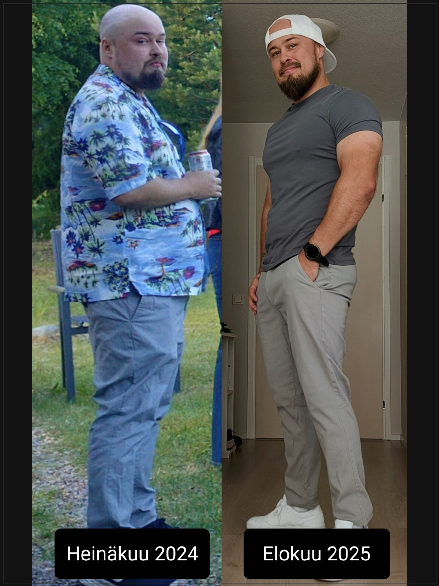

Oma elämäntapamuutos

Kaikki alkaa päätöksestä muuttaa suuntaa
Tiedän omasta kokemuksestani, miltä tuntuu, kun oma hyvinvointi ei ole sillä tasolla, jolla sen haluaisi olevan. Haluan jakaa oman tarinani, koska uskon, että se voi antaa myös muille rohkeutta ottaa ensimmäiset askeleet kohti parempaa elämää. Jossain vaiheessa havahduin siihen, kuinka paljon elämäni oli mennyt mullin mallin. Voin sekä fyysisesti että psyykkisesti huonosti, ja ymmärsin, että tilanteen muuttamiseksi minun oli tehtävä jotain toisin.
Päätin alkaa rakentaa itselleni parempia elämäntapoja. Aloitin pienin askelin kiinnittämällä huomiota ruokavaliooni ja lisäämällä liikuntaa arkeeni. Ensin lähdin liikkeelle kävelylenkeistä, ja myöhemmin kuntosaliharjoittelusta tuli tärkeä osa elämääni.
Vaikka itse aloittaminen tuntui vaikealta, ymmärsin nopeasti, ettei minun tarvinnut muuttaa kaikkea kerralla. Tärkeintä oli ottaa ensimmäinen askel ja jatkaa siitä eteenpäin.
Muutos, joka vaikutti koko elämääni
Ajan myötä huomasin, kuinka paljon elämäntapojen muuttaminen vaikutti hyvinvointiini. Fyysisen kunnon kehittymisen lisäksi jaksamiseni parani huomattavasti, mielialani koheni ja itseluottamukseni kasvoi.
Nykyään voin sekä fyysisesti että psyykkisesti paljon paremmin. Ero aiempaan on valtava, ja olen oppinut konkreettisesti, kuinka suuri merkitys terveellisillä elämäntavoilla on ihmisen hyvinvoinnille ja toimintakyvylle.
Tämä matka on opettanut minulle, ettei elämäntapamuutoksessa ole kyse pelkästään ulkonäöstä tai vaa'an lukemasta. Kyse on myös siitä, kuinka jaksamme arjessa, millaiseksi tunnemme olomme ja miten pystymme nauttimaan elämästämme.
Miksi haluan auttaa myös muita?
Oma kokemukseni on yksi syy siihen, miksi halusin lähteä opiskelemaan liikunta-alaa ja kehittämään osaamistani valmentajana. Haluan auttaa muitakin löytämään itselleen sopivan tavan liikkua, kehittyä ja voida paremmin.
Ymmärrän, että suurin kynnys voi olla juuri aloittaminen. Siksi haluan tarjota asiakkailleni yksilöllistä ohjausta ja tukea, joiden avulla tavoitteita voidaan lähestyä askel kerrallaan.
Sinun ei tarvitse tietää valmiiksi kaikkea harjoittelusta tai ravitsemuksesta, eikä sinun tarvitse olla jo hyvässä kunnossa aloittaaksesi.
Olipa tavoitteesi sitten painonpudotus, lihaskasvu, parempi fyysinen kunto tai kokonaisvaltaisesti parempi olo, voimme lähteä rakentamaan sinulle sopivaa kokonaisuutta omista lähtökohdistasi.
Sinun ei tarvitse tehdä kaikkea kerralla. Sinun tarvitsee vain ottaa ensimmäinen askel.
Nyt on sinun vuorosi
Jos olet miettinyt elämäntapamuutoksen aloittamista, mutta et oikein tiedä, mistä lähteä liikkeelle, autan sinua mielelläni.
Tutustutaan tilanteeseesi, keskustellaan tavoitteistasi ja selvitetään, millainen valmennus sopisi juuri sinulle.
Aloita maksuton alkukartoitus